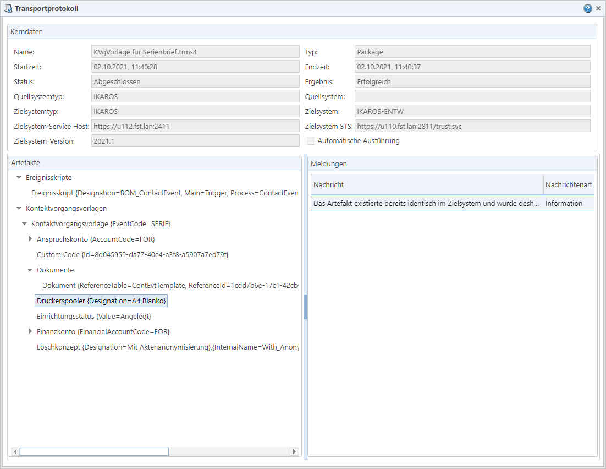

„Name“: Der Dateiname
der Paketdatei bzw. der Name des transportierten Changes/Change Sets.
„Name“: Der Dateiname
der Paketdatei bzw. der Name des transportierten Changes/Change Sets.
Abb. 34: Dialog mit einem Transportprotokoll
Rahmen „Kerndaten“
Enthält schreibgeschützt die Informationen zum Zielsystem des Transports sowie Zeitstempel und den allgemeinen Status der Transportaktion.
„Name“: Der Dateiname
der Paketdatei bzw. der Name des transportierten Changes/Change Sets.
Die Angaben in „Quellsystemtyp“ und
„Quellsystem“
identifizieren das TRMS bzw. IKAROS-System, aus dem das transportierte Paket
stammt. Beim Transport von TRMS zu IKAROS „IKAROS“, beim Transport von TRMS zu
TRMS entsprechend "TRMS.
„Zielsystemtyp“,
„Zielsystem“,
„Zielsystem-Version“,
„Zielsystem Service
Host“ und „Zielsystem-STS“
identifizieren das IKAROS- bzw. TRMS-Zielsystem (analog zu den
„Systeme“-Stammdaten im TRMS). Wenn beim Transport mehrere Zielsysteme
ausgewählt wurden, liegt zu jedem Zielsystem ein eigenes Transportprotokoll
vor.
„Startzeit“ zeigt an,
wann der Transport gestartet wurde; an der „Endzeit“ ist
erkennbar, wann die Installation im Zielsystem abgeschlossen bzw. der Transport
abgebrochen wurde.
„Status“: Information,
ob der Transportprozess an sich technisch abgeschlossen werden konnte (auch wenn
dabei Fehler zurückgemeldet wurden).
„Typ“: Das Format des
Artefaktpakets („Package“ (Paketdatei), „Change“ oder „Change Set“)
„Ergebnis“:
Information, ob alle Artefakte aus dem Paket im Zielsystem installiert werden
konnten („Erfolgreich“) oder mindestens eines (oder mehrere oder alle) nicht
(„Fehler“).
Kontrollkästchen „Automatische
Ausführung“: Zeigt ab, ob der Transport mit dem
Kommandozeilenprogramm „TrmsCli.exe“ durchgeführt wurde. Hinweis: Damit in
diesem Fall überhaupt ein Protokoll angelegt wird, müssen Sie dem Programm
ausdrücklich den Parameter „/LoggingInTRMS“ sowie die notwendigen
Verbindungsdaten zum TRMS übergeben.
Rahmen „Artefakte“
Zeigt in einer alphabetisch sortierten Baumansicht die Artefakte an, die transportiert wurden. Wenn Sie ein Artefakt auswählen, können Sie im rechten Rahmen „Meldungen“ die zu diesem Artefakt protokollierten Meldungstexte ansehen.
Elemente, zu denen Fehler protokolliert wurden, erkennen Sie an einem roten X-Symbol. Wenn ein Artefakt zu einem Fehler geführt hat, werden weder es selbst noch seine Unterartefakte im Zielsystem installiert.
Rahmen „Meldungen“
Zeigt die protokollierten Meldungen zum aktuell in der Baumansicht markierten Knoten. Durch Aufrufen eines Eintrags können Sie den Text in einem Meldungsdialog anzeigen.